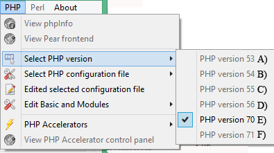
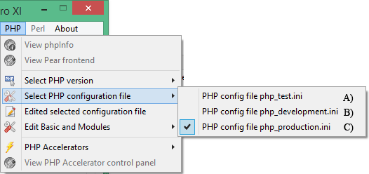
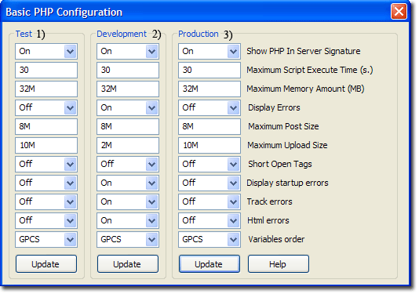
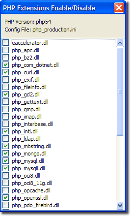
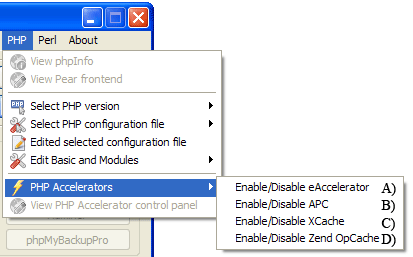
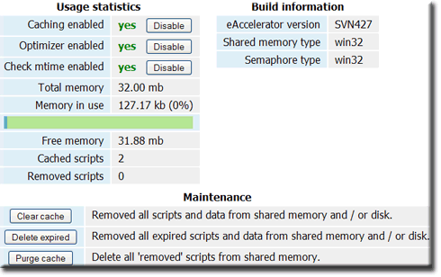
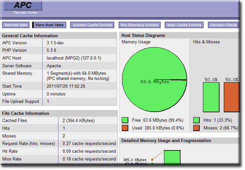
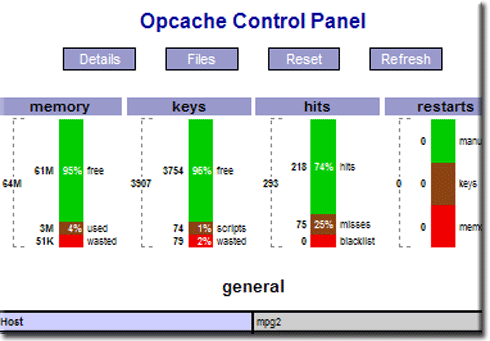

|
|
PHP |
PHP is a general-purpose scripting language designed for creating dynamic web pages. The Apache server uses a PHP processor module to generate the final web page being served. It interprets code embedded into HTML documents. PHP has been pre-configured for test, production and development. A UniController sub-menu allows you to easily switch between the three configurations. This page covers configuration and additional features for maintaining PHP.
Note 1: A default installation of Uniform Server ZeroXIII installs PHP as an Apache module.
Note 2: PHP Net decided to skip PHP version 6.0
View phpInfo
PHP > View phpInfo
This menu button opens a page in the default browser, that runs the PHP function phpinfo() displaying a wealth of information relating to PHP. The page provides very detailed information, and a menu splits this into smaller sections, making it easier to read.
- url=http://localhost:80/us_extra/phpinfo.php - Page displayed
- Location: C:\UniServerZ\home\us_extra\phpinfo.php
PHP Info Menu
- Configuration - Displays PHP Core configuration.
- Enviroment - PHP current environment
- Modules - List all modules
- Extensions - Overview and details (includes functions) for all loaded extensions.
- Variables - List all currently available PHP variables.
- General - Intro information
Select PHP version
The Uniform Server Zero XIII provides switching between PHP versions 5.3, 5.4, 5.5, 5.6, 7.0 or 7.1 to achieve this you need to download a suitable PHP plugin for each version (for example ZeroXIII_php_5_3_29_h.exe, ZeroXIII_php_5_4_45_h.exe, ZeroXIII_php_5_5_37_h.exe, ZeroXIII_php_5_6_23_h.exe, ZeroXIII_php_7_0_8_h.exe and ZeroXIII_php_7_1_0_h.exe).
PHP > Select PHP version
Note: While Apache is running to prevent problems menu option is disabled (greyed out).
|
Selection:
Note 1: For the new settings to become effective you must restart the Apache server. |
 |
Note: Full menu details; see PHP Version Switching page.
Select PHP configuration file
The Uniform Server Zero XIII provides switching between PHP configuration files php_test.ini, php_development.ini and php_production.ini
PHP > PHP configuration file
Note: While Apache is running to prevent problems menu option is disabled (greyed out).
|
Selection:
Note 1: For the new settings to become effective you must restart the Apache server. |
 |
Note:
In the following xxx represents the PHP series selected either php53, php54, php55, php56, php70 or php71 (covered above).
Test Configuration file
PHP > Select PHP configuration file > php_test.ini
- File path: UniServerZ\core\xxx\php_test.ini
- This configuration file is pre-configured and can be modified for testing before making changes to the other two configuration files.
- Note 1: In a default installation of The Uniform Server Zero, the current configuration is a copy of this file (php_test.ini = php_production.ini).
Production Configuration file
PHP > Select PHP configuration file > php_production.ini
- File path: UniServerZ\core\xxx\php_production.ini
- This configuration file is pre-configured for production use.
- Note 1: Errors are not displayed; these are directed to Apache's log file.
Development Configuration file
PHP > Select PHP configuration file > php_development.ini
- File path: UniServer\core\xxx\php_development.ini
- This configuration file is pre-configured for development.
- Note 1: Errors are displayed in a user's browser and also directed to log file
Edited selected configuration file
The following menu allows you to edit the currently selected (covered above) PHP configuration file in notepad.
Note: While Apache is running to prevent problems menu option is disabled (greyed out).
PHP > Edited selected configuration file
- Note: This configuration file is the active configuration. When Apache is started, the contents of this file will configure PHP.
Edit Basic and Modules
Edit Basic Configuration
PHP > Edit Basic and Modules > Edit Basic Configuration
|
This menu item allows you to change commonly configured PHP options. Note: While Apache is running to prevent problems menu option is disabled (greyed out).
|
 |
Note 1: After making changes, click the corresponding update button. This writes the modified data to the associated configuration file.
Note 2: Changes to the current configuration are used next time the servers are started.
Note 3: For test, development and production configuration files to become effective, you need to select the appropriate file see and restart Apache.
Note 4: Do not enable short open tags. Doing so will conflict with other languages such as XML’s open tag. For detailed information, and the exception, see Short open tags
|
PHP Modules Enable/Disable The following sub-menu allows you to enable or disable PHP extensions for the PHP > Edit Basic and Modules > PHP Modules Enable/Disable Note: While Apache is running to prevent problems menu option is disabled (greyed out).
Note: After changing state you must restart the Apache server File modified:
|
 |
PHP Accelerators
The Uniform Server Zero XIII provides support for four PHP accelerators: eAccelerator, APC, Xcache and Zend OpCache. The following UniController sub-menu allows you to enable or disable these accelerators.
PHP > PHP Accelerators
Note: While Apache is running to prevent problems menu option is disabled (greyed out).
|
Selection:
Note 1: For the new settings to become effective you must restart the Apache server. Note 2: A greyed out menu option indicates the accelerator is unavailable.
|
 |
View PHP Accelerator control panel
The Uniform Server Zero provides support for four PHP accelerators: eAccelerator, APC, Xcache and Zend OpCache. The following UniController sub-menu allows you to display the currently selected accelerator's controller in your default browser.
PHP > View PHP Accelerator control panel
Note: View PHP Accelerator control panel menu button greyed out indicates Apache and MySQL not running. The button is enabled when Apache and MySQL are running and PHP installed.
Accelerator control panel screen shots:
|
eAccelerator control panel:
eAccelerator is a free open-source PHP accelerator and optimizer. It increases the performance of PHP scripts by caching them in their compiled state, so that the overhead of compiling is almost completely eliminated. The Uniform Server Zero default installation has eAccelerator disabled. The eAccelerator control panel is shown on the right. |
 |
|
APC control panel:
The Alternative PHP Cache (APC) is a free and open opcode cache for PHP. It is a robust framework for caching and optimizing PHP intermediate code. The Uniform Server Zero default installation has APC disabled. The APC control panel is shown on the right. |
 |
|
Zend OptCache:
Zend OptCache provides faster PHP execution through opcode caching and optimization. It improves PHP performance by storing precompiled script bytecode in the shared memory. The Uniform Server Zero default installation has Zend OptCache disabled. The Zend OptCache control panel is shown on the right. |
 |